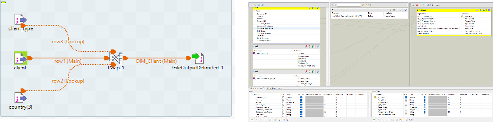
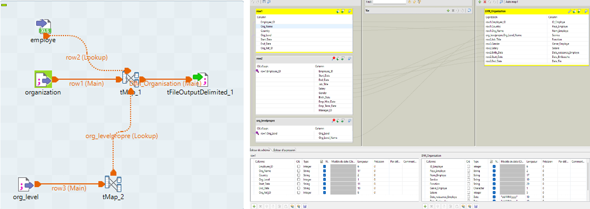
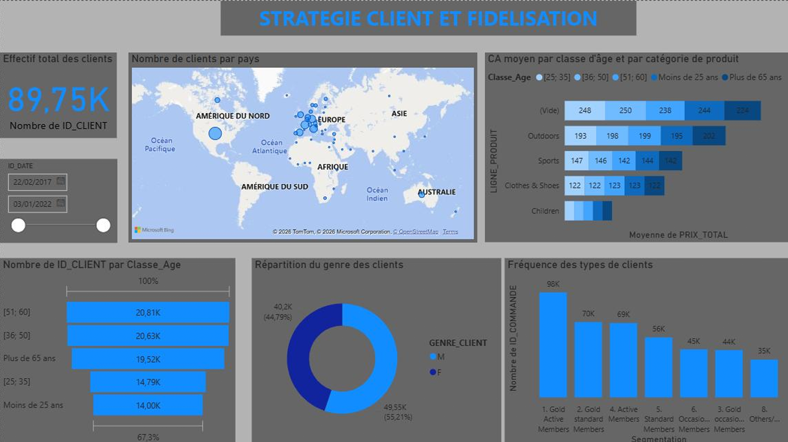
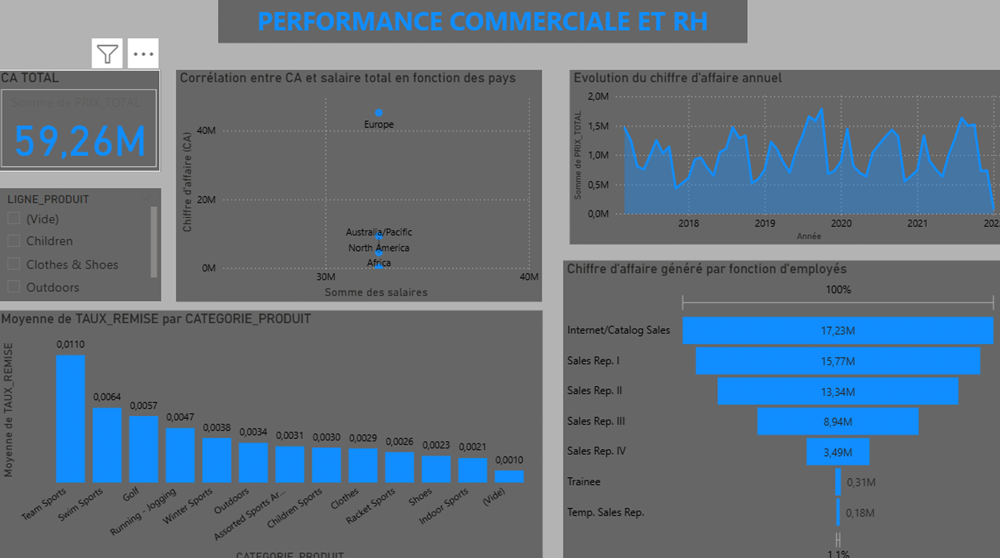
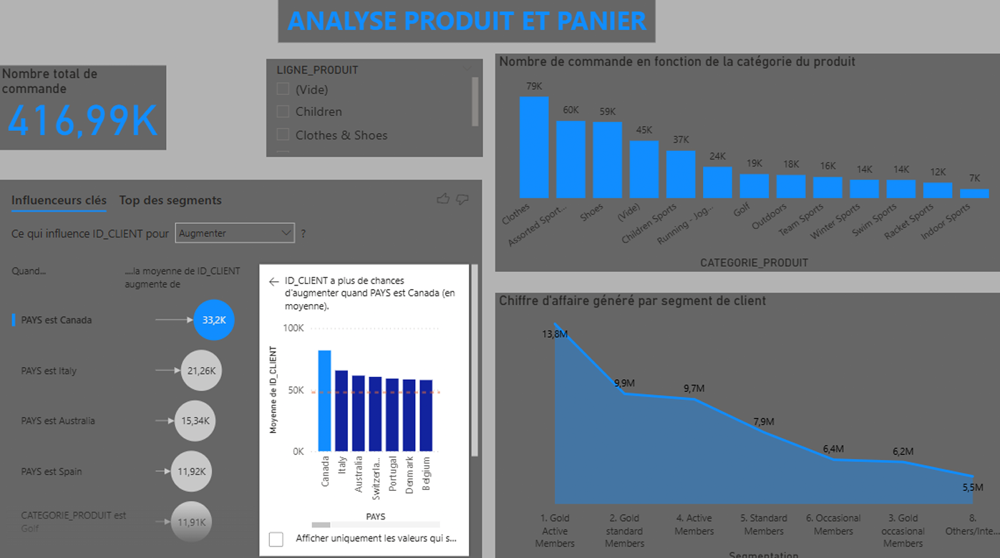
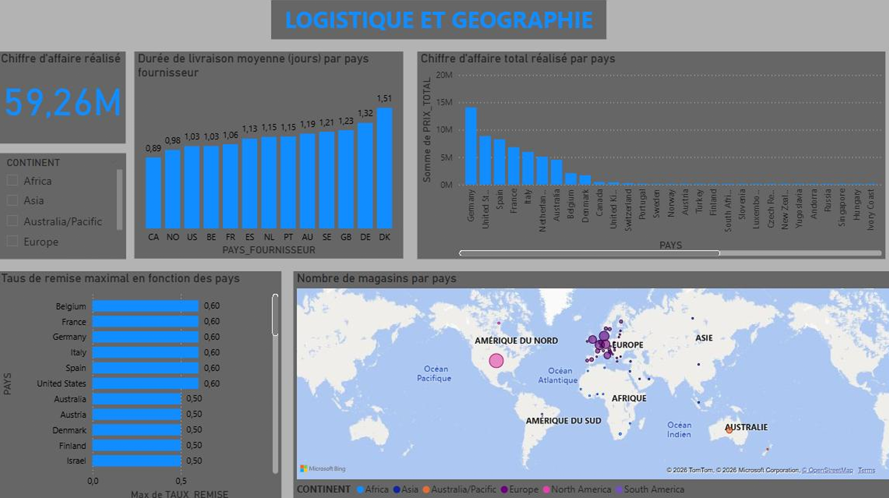
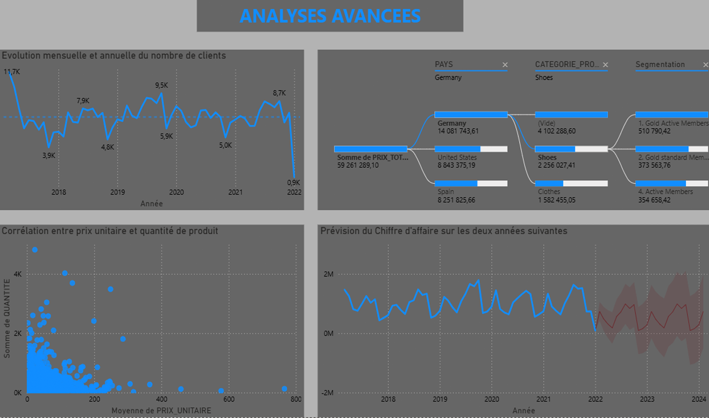

SportOne est une entreprise internationale de vente au détail d’articles de sport et de plein air, s'appuyant à la fois sur un réseau de magasins physiques mondiaux et sur un site e-commerce. Face à la multiplication de ses canaux, l'entreprise accumule un volume massif de données de production hétérogènes (période 2017-2022).
L'objectif de cette SAÉ était de concevoir, d'alimenter et d'exploiter un entrepôt de données (Data Warehouse) complet à l'aide d'une architecture en étoile, pour centraliser ces informations silotées et en extraire des insights décisionnels actionnables à forte valeur ajoutée.
Pour mener à bien ce projet d'envergure, notre groupe s'est structuré avec une répartition rigoureuse via un suivi de projet sous Trello :
Le premier grand défi résidait dans l'hétérogénéité des formats sources : fichiers .mdb (Access), tables .csv, classeurs Excel et fichiers plats .txt. Nous avons modélisé manuellement un Schéma en Étoile structuré autour d'une table centrale FAIT_Ventes et de 5 dimensions clés :
tMap avec une variable personnalisée DatePropre pour homogénéiser les formats de dates altérés (mix de tirets et doubles slashes) afin de calculer l'âge exact de chaque individu.product_list.csv et des fournisseurs. Pour isoler les catégories et sous-catégories, la source a été injectée quatre fois en entrée du tMap pour contourner le formatage scientifique erroné des ID (ex: 1,01E+11).

Les données nettoyées exportées par Talend ne pouvaient pas être digérées directement par le serveur Oracle universitaire. Pour contourner les limites d'importation graphique et les coupures de connexion (timeouts) dues à la forte volumétrie de la table de faits, nous avons développé une suite d'automatisation en Python :
Le script découpait automatiquement le bloc monolithique en fichiers plus légers et générait dynamiquement un script maître d'orchestration baptisé LANCER_TOUT.sql.
Après l'enrichissement des données dans Power Query (création des segments de clientèle, des tranches d'âge et calcul du délai logistique), nous avons structuré notre analyse interactive autour de 5 thématiques stratégiques majeures :
Mise en évidence d'une base consolidée de 89,75 K clients à l'équilibre parfait entre genres (55,21 % d'hommes, 44,79 % de femmes). La segmentation montre un cœur de cible adulte (36-60 ans) totalisant plus de 41 000 clients à fort pouvoir d'achat. L'analyse révèle également que les membres "Gold" et actifs génèrent le plus fort volume de commandes, confirmant l'importance de renforcer les programmes de fidélité.
SportOne affiche un chiffre d’affaires global de 59,26 M€. L'analyse croisée révèle que l’Europe est le principal moteur commercial (plus de 40 M€) mais concentre la masse salariale la plus lourde. Les canaux numériques (Internet/Catalog Sales) se détachent comme les plus rentables (17,23 M€), suivis des Sales Rep I (15,77 M€), tandis que la rentabilité des stagiaires ou intérimaires reste marginale.
Sur un volume massif de 416,99 K commandes, le socle des ventes repose sur trois catégories reines : les vêtements (Clothes - 79 K), les articles de sport divers (Assorted Sports - 60 K) et les chaussures (Shoes - 59 K). Le Canada se positionne comme le pays affichant le panier moyen de commandes le plus engagé par client.
La chaîne logistique montre une réactivité remarquable avec des délais d'expédition moyens très courts, oscillant entre 0,89 jour (Canada) et 1,51 jour (Danemark). Cependant, la domination de l'axe franco-allemand s'accompagne d'une politique de démarque agressive (taux de remise grimpant jusqu'à 60 %), alertant sur une possible érosion des marges nettes.
En exploitant l'arbre de décomposition de Power BI, nous avons prouvé que la catégorie "Shoes" commandée par le segment "Gold Active" en Allemagne constituait la niche de rentabilité absolue de l'entreprise. Enfin, l'intégration d'un modèle prédictif (Forecasting) sur le chiffre d'affaires projette une tendance globalement stable pour les deux années à venir (2023-2024), tout en alertant sur l'élargissement des intervalles de confiance en fin de période.





Cette SAÉ décisionnelle avancée m'a permis de valider les jalons d'apprentissage critiques suivants :
Maîtrise de la modélisation multidimensionnelle (schéma en étoile), définition des dimensions d'analyse et de la granularité des tables de faits métier.
Capacité à extraire des données hétérogènes (Access, Excel, CSV), à appliquer des règles de nettoyage complexes (tMap, variables) et à automatiser les scripts d'injection.
Conception de dashboards décisionnels complets (Power BI, DAX), structuration de scénarios de cross-selling et intégration de briques d'intelligence artificielle analytique.
Ce projet démontre qu'une intégration de données rigoureuse est le socle indispensable à tout déploiement de Business Intelligence fiable. L'infrastructure mise en place a permis de transformer un ensemble de fichiers disparates et mal organisés en un outil d'aide à la décision robuste. Pour soutenir sa croissance future, SportOne devrait réduire sa dépendance aux remises agressives et piloter ses stocks en temps réel en couplant ce modèle à des données externes, comme les tendances climatiques locales ou les flux des réseaux sociaux.